Лучший проект в области генеративного AI

Авито
Развитие генеративного ИИ как системный драйвер роста компании Авито
Финалисты
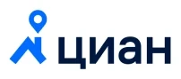
Циан помощник — ИИ сервис для поиска недвижимости и консультаций

Мультиагентная система автоматизации портфельного управления для премиум-сегмента Совкомбанка
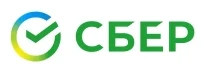
GigaLytics — AI-first платформа для диалоговой аналитики ИИ агентов
Технологическая инновация года
VisionLabs
DeepFake-детекция VisionLabs для MTC ID, для улучшения процессов онлайн-идентификации для финансовых организаций
Финалисты
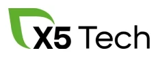
AgentOPS X5. Продуктивизация ИИ-агентов. Создание инфраструктуры для продуктивизации
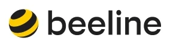
DCD Design (Билайн x red_mad_robot): карта знаний и маршрутизация запросов для корпоративных ИИ-агентов
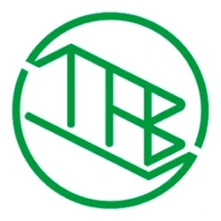
«ИИ-Технолог» — мультиагентная система для автоматизации технологической подготовки производства
Лучшая инхаус-разработка в области генеративного AI
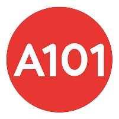
А101
Ускорение формирование смет с ИИ-сметчиком на 60%
Финалисты
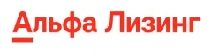
AI Computer Use: ИИ-платформа полной автоматизации бизнес-процессов

Агент-юрист: Автономная система юридической экспертизы для корпоративного бизнеса
AI-контент-конвейер для персонализированного обучения в Skyeng
ИИ-агент для автономного решения инцидентов на телеком оборудовании
Лучший образовательный проект в сфере генеративного AI
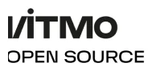
ИТМО
AI Talent Hub — магистратура и сообщество по ИИ Университета ИТМО
Финалисты
Разработка и интеграция онлайн-курсов по изучению ИИ для решения рабочих задач под разные карьерные треки
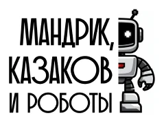
Чемпионат по ИИ в Спортмастере: 315 сотрудников и +70% применения GenAI
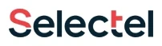
Образовательный проект «Защищ[AI]». Интерактивная игра по практической безопасности генеративного AI
За вклад в развитие GenAI-сообщества

LLM Arena
LLM Arena: независимый рейтинг LLM для русскоязычного сообщества
Финалисты
ITMO OpenSource — сообщество научного открытого кода в области ИИ

Кейсориум Generation AI — медиа о генеративном AI
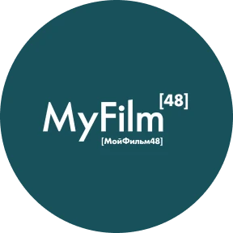
MyFilm48 — международная инфраструктура генеративного кино
Лучшее GenAI-решение в HR

Северсталь + Xenia AI
Внедрение Xenia AI для автоматизации первичных собеседований в компании Северсталь
Финалисты
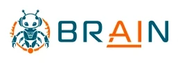
BRaiN HR — онлайн-платформа на базе ИИ для автоматизированного подбора персонала
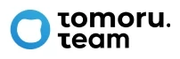
Tomoru.Team — AI-система подбора команды с 27% конверсией в найм
Инструмент на базе AI «Нейронайм» для автоматизации подбора персонала в Билайне
Цифровая трансформация года
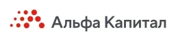
Альфа-Капитал
AI-экосистема: от двух энтузиастов до системной трансформации wealth management за 2,5 года
Финалисты
ИИ-трансформация Группы Совкомбанк
AI-платформа: единый корпоративный GenAI-контур для сотрудников, продуктов и внутренних AI-сервисов
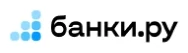
ИИ в каждый процесс: корпоративная GenAI-экосистема Banki.ru
Лучшее применение генеративного AI для разработки и тестирования

Альфа-Банк
AgenticML: система агентов для автоматизации жизненного цикла ML-моделей
Финалисты
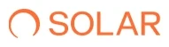
ИИ-плагин Solar appScreener для ускорения разработки ПО и устранения уязвимостей
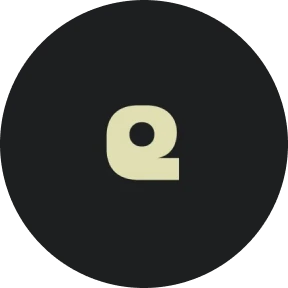
Интеллектуальная мультиагентная система «AI-ревьюер кода»
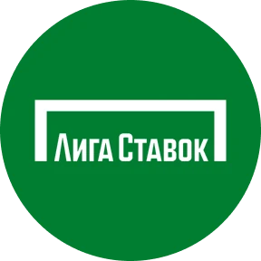
LigaGPT: агентная система для автоматизации QA, SRE и поддержки с управляемым AI-контуром
Лучшее GenAI-решение в продажах и маркетинге
Botamin
Botamin — ИИ для автоматизации первой линии продаж
Финалисты
CRM AI Sales Engine: платформа, которая переосмысляет логику взаимодействия банка с бизнес-клиентом
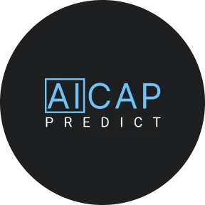
AICAP Predict — предиктивная платформа ИИ для eye-tracking анализа креативов
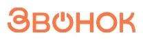
ИИ-продавец — экспертные телефонные продажи, доступные каждому бизнесу
Лучшее GenAI-решение в области клиентской поддержки
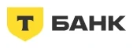
Т-Банк
Афанасий — AI-агент, который автоматизирует работу операторов контакт-центра
Финалисты
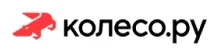
Замена внешнего контакт-центра на собственную voice-AI-платформу
AI-экосистема клиентского сервиса: замкнутый цикл от текстового канала до дашборда руководителя
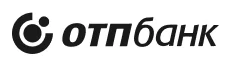
AI-подход к анализу коммуникаций: как речевая аналитика с GenAI помогает лучше понимать клиентов
Лучший стартап в области генеративного AI
Semantica AI
Semantica AI — платформа мониторинга и роста видимости брендов в нейросетях
Финалисты
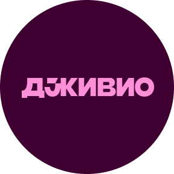
Автоматизация управления бизнесом на маркетплейсах с помощью системы ИИ-агентов
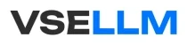
VseLLM: единая платформа доступа к LLM API для российского бизнеса
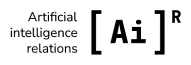
AIR — российский GenAI-стартап, создающий прикладную ИИ-платформу для бизнеса и коммуникаций
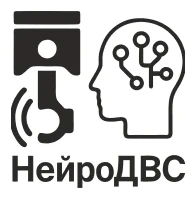
AI-система диагностики двигателей транспорта с использованием LLM+RAG
Выбор генеративного AI
Вымпелком
AI инженер - ИИ-агент для диагностики проблем на телеком оборудовании
Спецприз от медиа для предпринимателей «Инк»
Semantica AI
Semantica AI — платформа мониторинга и роста видимости брендов в нейросетях